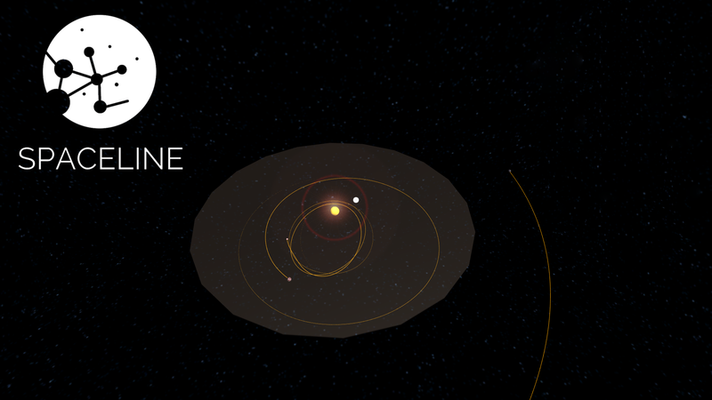

SpaceLine 🌌
A educational physics-based space sandbox to allows you to construct a stunning star system by creating stars and planets.
SPACELINE
SpaceLine is a educational physics-based space sandbox which uses gravity, climate, and life simulations to allow the user to create their own virtual stars and planets. Which can then be customized to construct a stunning but fragile solar system.
The interaction is not only limited to Stars and Planets, the user can also create moons and bianry stars systems using Spaceline
Background:
I feel that today’s education system has limited the hands on experiments to mere segments in the textbook and topics such as space exploration have to pushed to the fringes.
SpaceLine allows everyone to marvel at their own star systems and creations. It also allows users to customize many aspects like size, mass, atmospheric composition of the planets and then predicts the presence of life and in case life cannot exist, informs the player what went wrong.
What all is customizable:
- Star
- Size
- Mass
- Temperature
- Color
- Planets
- Orbit
- Eccentricity
- Mass
- Size
- Atmospheric Composition
- Moons
Resources used:
Built With:
- Unity Engine
- C#
- Blender
- Steam VR for VR Spectator Mode
Try It Out:
https://pulkitgarg.itch.io/spacelineControls:
-
Mouse Scroll to zoom In/Out
-
Left Click on Star to open Star settings. Right Click anywhere to close
-
Press Tab to open/close planet creation menu, drag sliders to adjust value, enter data in input fields
- left click anywhere to spawn planet
-
Hover on any planet to view stats
-
Press V to toggle VR spectator mode ( Requires SteamVR compatible Headset)